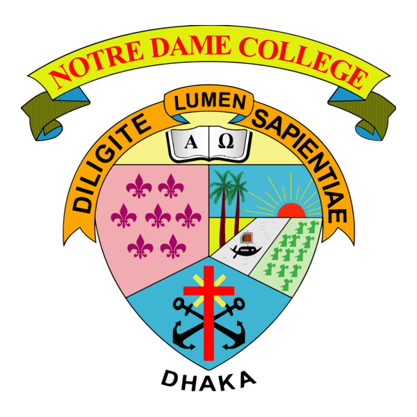
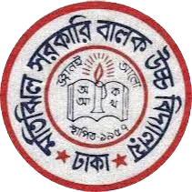

American International University Bangladesh (AIUB)
Program: BSc in Computer Science & Engineering (CSE)
Status:Ongoing
Key Relevant Subjects:
Object Oriented Programming (OOP)
Data Structures & Algorithms
Database Systems
Web Technologies
Computer Graphics
At AIUB, I am focusing on developing strong fundamentals in programming and software development.
I complete lab-based projects and practice building structured code with proper documentation.

Higher Secondary Certificate (HSC)
Notre Dame College, Dhaka
Group: Science
Key Relevant Subjects:
Physics
Chemistry
Higher Mathematics
ICT
My HSC education built my analytical thinking and helped me develop problem-solving skills.
It also gave me a strong base in mathematics and science, which supports my CSE learning.

Secondary School Certificate (SSC)
Motijheel Government Boys' High School
Group: Science
Key Relevant Subjects:
General Mathematics
Science
English
ICT Basics
My SSC education helped me build discipline and strong basics in mathematics and science.
This stage developed my interest in technology and problem-solving.
 BSc in CSE (Undergraduate)
BSc in CSE (Undergraduate)